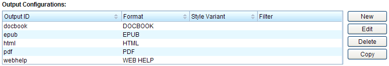

1.8.2. Output configurations
In the previous chapter you've created a new publication configuration which is now listed as an entry in the "Publications" list. Below is the "Output Configurations" list, which initially contains 5 entries, one for each output format that is supported by Docmenta: HTML, Web Help, PDF, EPUB and DocBook:

Figure 1.8.3. Output configuration list
The format HTML is used to export the publication as one or more static HTML pages. Static means that the publication is exported as pure HTML and CSS but has by default no dynamic elements like JavaScript (although the output configuration allows to add a custom JavaScript file). The format Web Help is similar to HTML, but uses JavaScript to provide a collapsable tree for more user-friendly navigation as well as keyword search functionality. Another interesting output format is EPUB, which is a standardized eBook format. EPUB is based on the web-technologies HTML, CSS and XML.
In the next chapter, we'll create a static HTML export as an example. To see the current settings for the HTML output configuration, select the entry with ID "html" and click the "Edit" button next to the list. Alternatively you can double-click the entry. This will open the output-configuration dialog. The dialog has three tabs: "General", "Numbering" and "HTML". The "General" and "Numbering" tabs contain settings which are available for all output-formats:

Figure 1.8.4. Output configuration: general settings
Figure 1.8.5. Output configuration: numbering settings
The "HTML" tab provides settings which are specific for the HTML format. Besides static HTML this also includes Web Help and EPUB (though not all of the settings make sense for Web Help and EPUB and are therefore disabled for these formats).

Figure 1.8.6. Output configuration: HTML settings
For this tutorial just leave the default settings and click the "Cancel" button to close the dialog.
Click the "pdf" entry in the list to see the default settings for PDF output. The first two tabs, "General" and "Numbering" are the same as for HTML output, whereas the third tab, "PDF", contains PDF specific settings:
Figure 1.8.7. Output configuration: PDF settings
Click the "Cancel" button to close the dialog without saving any changes.
For details on the settings in the output-configuration dialog, see 'Output configuration' in the Reference Manual.
The following chapters in this tutorial describe how to use the output-configurations for creating publication exports.